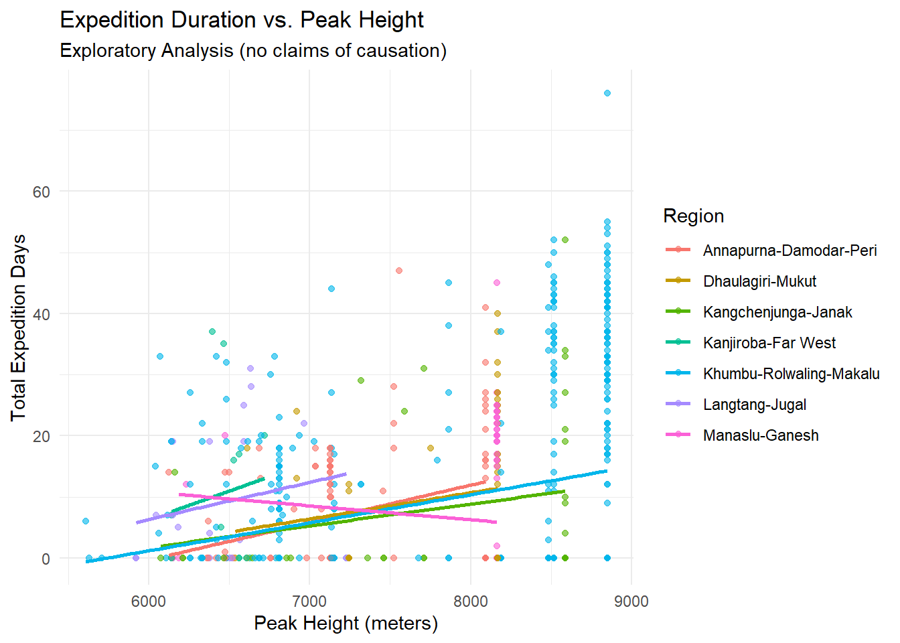
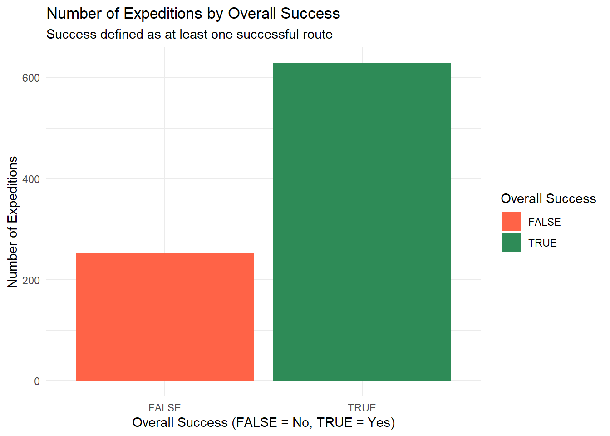

Rows: 882 Columns: 69
── Column specification ────────────────────────────────────────────────────────
Delimiter: ","
chr (22): EXPID, PEAKID, SEASON_FACTOR, HOST_FACTOR, ROUTE1, ROUTE2, NATION...
dbl (17): YEAR, SEASON, HOST, SMTDAYS, TOTDAYS, TERMREASON, HIGHPOINT, CAMP...
lgl (27): ROUTE3, ROUTE4, SUCCESS1, SUCCESS2, SUCCESS3, SUCCESS4, ASCENT3, ...
date (3): BCDATE, SMTDATE, TERMDATE
ℹ Use `spec()` to retrieve the full column specification for this data.
ℹ Specify the column types or set `show_col_types = FALSE` to quiet this message.
peaks <- readr::read_csv('https://raw.githubusercontent.com/rfordatascience/tidytuesday/main/data/2025/2025-01-21/peaks_tidy.csv')
Rows: 480 Columns: 29
── Column specification ────────────────────────────────────────────────────────
Delimiter: ","
chr (14): PEAKID, PKNAME, PKNAME2, LOCATION, HIMAL_FACTOR, REGION_FACTOR, RE...
dbl (12): HEIGHTM, HEIGHTF, HIMAL, REGION, TREKYEAR, PHOST, PSTATUS, PEAKMEM...
lgl (3): OPEN, UNLISTED, TREKKING
ℹ Use `spec()` to retrieve the full column specification for this data.
ℹ Specify the column types or set `show_col_types = FALSE` to quiet this message.
library(tidyverse)
── Attaching core tidyverse packages ──────────────────────── tidyverse 2.0.0 ──
✔ dplyr 1.1.4 ✔ readr 2.1.5
✔ forcats 1.0.0 ✔ stringr 1.5.1
✔ ggplot2 3.5.1 ✔ tibble 3.2.1
✔ lubridate 1.9.3 ✔ tidyr 1.3.1
✔ purrr 1.0.2
── Conflicts ────────────────────────────────────────── tidyverse_conflicts() ──
✖ dplyr::filter() masks stats::filter()
✖ dplyr::lag() masks stats::lag()
ℹ Use the conflicted package (<http://conflicted.r-lib.org/>) to force all conflicts to become errors
library(lubridate)# join two datasetexped <- exped |>mutate(PEAKID =as.character(PEAKID))peaks <- peaks |>mutate(PEAKID =as.character(PEAKID))exped_joined <- exped |>left_join(peaks, by ="PEAKID")exped_joined <- exped_joined |>mutate(overall_success = SUCCESS1 | SUCCESS2 | SUCCESS3 | SUCCESS4)
Visualization 1: Expedition Duration vs. Peak Height
plot1 <-ggplot(exped_joined, aes(x = HEIGHTM, y = TOTDAYS, color = REGION_FACTOR)) +geom_point(alpha =0.6, na.rm =TRUE) +geom_smooth(method ="lm", se =FALSE, na.rm =TRUE) +labs(title ="Expedition Duration vs. Peak Height",subtitle ="Exploratory Analysis (no claims of causation)",x ="Peak Height (meters)",y ="Total Expedition Days",color ="Region" ) +theme_minimal()print(plot1)
`geom_smooth()` using formula = 'y ~ x'

Visualization 2: Expedition Counts by Overall Success
success_summary <- exped_joined |>group_by(overall_success) |>summarise(count =n()) |>ungroup()plot2 <-ggplot(success_summary, aes(x =factor(overall_success), y = count, fill =factor(overall_success))) +geom_col() +labs(title ="Number of Expeditions by Overall Success",subtitle ="Success defined as at least one successful route",x ="Overall Success (FALSE = No, TRUE = Yes)",y ="Number of Expeditions",fill ="Overall Success" ) +scale_fill_manual(values =c("FALSE"="tomato", "TRUE"="seagreen")) +theme_minimal()print(plot2)

The echo: false option disables the printing of code (only output is displayed).